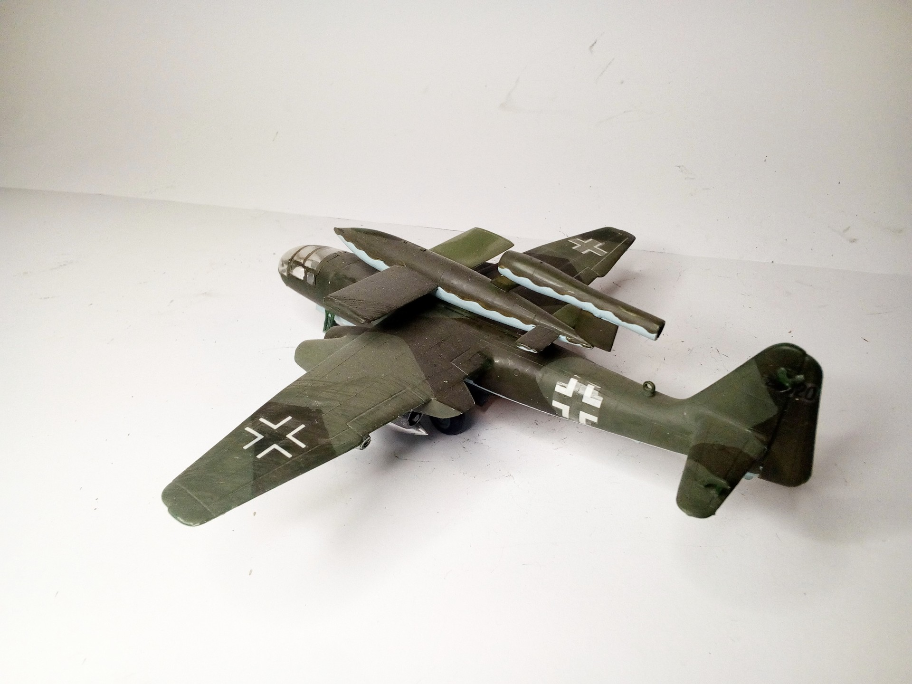
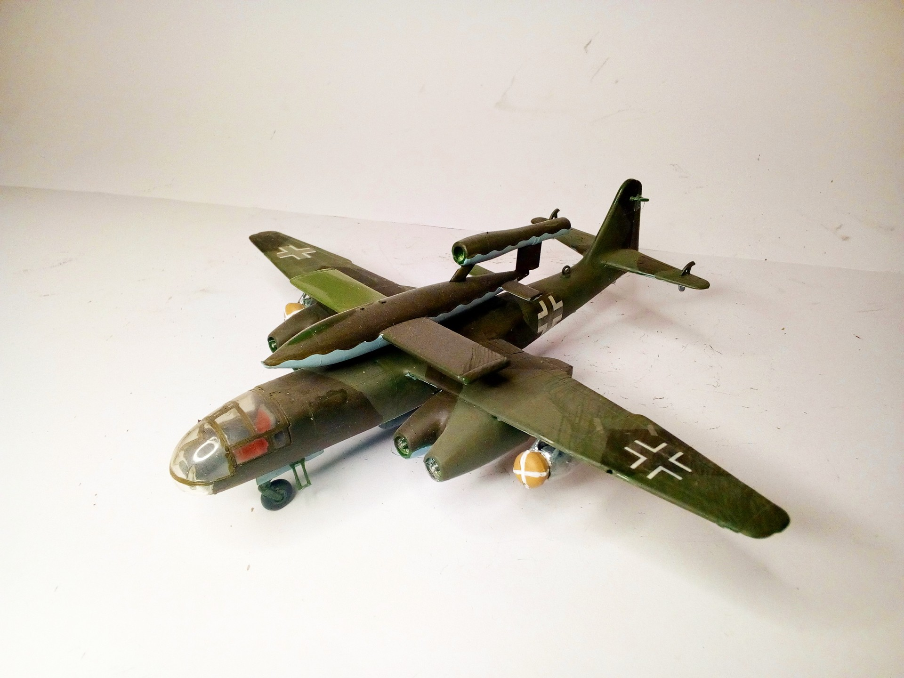
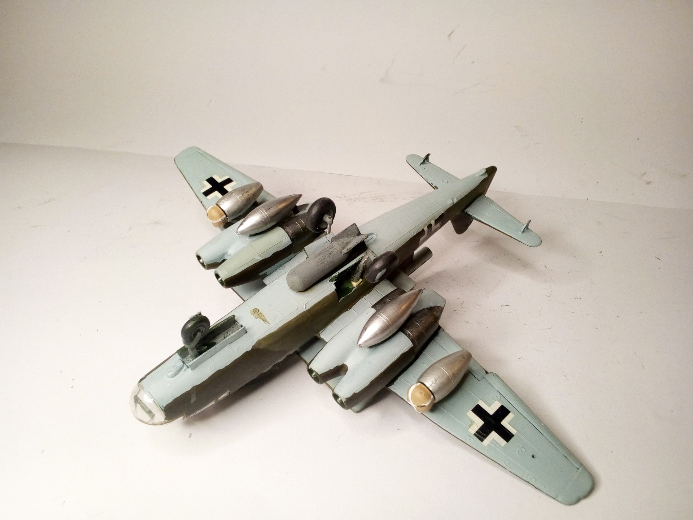

Aerei · scale model archive
Arado Ar234 C with V1 bomb
Arado Ar234 C with V1 bomb — Scale: 1/72. Kut: Frog (?) Note the hilarious loadout: 2 RATO rockets, 2 external tanks, 1 SC500 bomb and ... a V1, taking…

Photo gallery


English description
Kut: Frog (?)
Note the hilarious loadout: 2 RATO rockets, 2 external tanks, 1 SC500 bomb and ... a V1, taking off vould make the poor blighter in it sweating profusely
#1/72 #Frog
Descrizione italiana
Kut: Frog (?).
Note il hilarious loadout: 2 RATO rockets, 2 external tanks, 1 SC500 bomb e ... una V1, taking off vould make il poor bligther in lo sweating profusely.